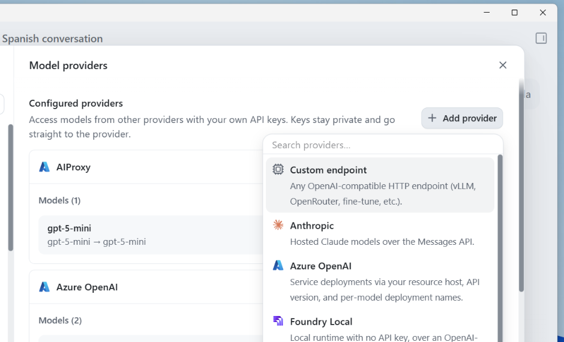

GitHub Copilot desktop app¶
The GitHub Copilot desktop app can call models exposed by the Azure AI Proxy directly, through its Model providers settings. This lets attendees chat with proxy-managed models (GPT-5-family and others) from a familiar client with no SDK or code required.
TL;DR — minimum setup¶
- Register for the event and copy the Proxy Endpoint, Event API Key, and model ID from the event page.
- In the GitHub Copilot App, open Settings → Model providers → Add provider → Custom endpoint.
-
Configure the provider:
Field Value Display name Azure AI ProxyBase URL Paste the event Proxy Endpoint exactly; it already ends in /api/v1Wire API Responses API key Paste the Event API Key Custom headers Leave blank -
Add the event model ID, then set Max prompt tokens to
80000and Max output tokens to4096. - Save everything, start a new chat, and select the new custom model.
Important
GPT-5-family models must use Responses. After any provider or model setting change, start a new chat because an existing chat can retain the previous configuration.
There are two ways to wire the proxy up as a provider — pick whichever matches the model you're adding:
| Provider type | Best for | Wire API |
|---|---|---|
| Azure OpenAI | Attendees who want the proxy to look like a normal Azure OpenAI resource, with per-model deployment names. | Chat Completions or Responses, per model |
| Custom endpoint | Any OpenAI-compatible model, using a single base URL for every model. Simplest option for GPT-5-family models. | Responses (required for GPT-5-family) |
⚠️ GPT-5-family models (
gpt-5-mini,gpt-5.6-luna, etc.) require Wire API =Responses. The Chat Completions API is not supported for these models. The app's own help text calls this out: "Most OpenAI-compatible gateways are Chat Completions; OpenAI's own GPT-5 series uses Responses." If you leave the default (Completions) you will seeCAPIError: 404 Not Foundin every chat.
Prerequisites¶
- Register for an event to obtain your event API key and the proxy endpoint URL (see Attendee registration).
- The event page's proxy endpoint already ends in
/api/v1— for example:https://<your-proxy-host>/api/v1
Option A — Custom endpoint (recommended for GPT-5-family)¶
- Open the GitHub Copilot app → Settings (
Ctrl+,/Cmd+,) → Model providers. -
Select + Add provider → Custom endpoint.
-
Fill in the form:
Field Value Display name Any name you like, e.g. Azure AI ProxyBase URL Paste the proxy endpoint from the event page exactly, e.g. https://<your-proxy-host>/api/v1Wire API Responses API key Your event API key Custom headers Leave blank -
Select Add provider, then add each model you want to use (e.g.
gpt-5-mini). -
Edit each added model and set conservative token caps:
Field Recommended value Max prompt tokens 80000Max output tokens 4096This prompt cap leaves room for Copilot's MCP servers, tools, and instructions while keeping requests under a typical 100K TPM Azure OpenAI deployment quota. Event organizers can raise or lower it based on the backing deployment's TPM headroom and expected concurrent attendees.

1. Start a new chat, pick your provider/model from the model picker, and send a message. After changing provider or model settings, open another new chat so Copilot uses the saved values.Expected result: the new chat returns a normal model response without a CAPI error. Keep the successful chat for the event handoff and delete failed test chats from the Chats list.
{kind=link}
{kind=link}
Option B — Azure OpenAI template¶
- Open the GitHub Copilot app → Settings → Model providers.
- Select + Add provider → Azure OpenAI.
-
Fill in the form:
Field Value Endpoint Paste the proxy endpoint from the event page exactly, e.g. https://<your-proxy-host>/api/v1API version 2025-04-01-previewor later (GPT-5-family Responses API requires2025-03-01-preview+)API key Your event API key Wire API Responses for GPT-5-family models -
Add each deployment name you were given (e.g.
gpt-5-mini) as a model. - Start a new chat and select your model. After changing provider or model settings, open another new chat so Copilot uses the saved values.
{kind=link}
Troubleshooting¶
| Symptom | Cause | Fix |
|---|---|---|
CAPIError: 404 Not Found on every message |
Wire API is set to Completions/Chat Completions for a GPT-5-family model. |
Edit the provider, change Wire API to Responses, save, and start a new chat. |
CAPIError: 429 / limit reached |
The model request exceeded the Azure OpenAI deployment's RPM/TPM quota. | Edit the model and set token caps, for example 80000 max prompt tokens and 4096 max output tokens, or increase the deployment capacity. |
| Copilot says MCP servers, tools, and instructions use too much context before the proxy logs a request | The model's max prompt token cap is too low for Copilot's local context budget. | Raise the model's max prompt tokens, for example to 80000, or run /context and disable unused MCP servers, tools, or instructions. |
| Settings look correct but an existing chat still fails | The existing chat was created before the latest provider/model setting change. | Start a new chat and reselect the custom model. |
CAPIError: 401 |
Wrong or expired event API key. | Re-copy the key from your event registration or admin portal. |
| Model not found / not listed | The deployment name doesn't match a resource attached to your event, or the event isn't active. | Confirm the exact deployment name with the event organiser. |
| Works once, then fails after a redeploy | The container app briefly serves the old revision while draining. | Wait ~10 seconds and retry. |
Event page quick setup¶
The event registration page now includes the same values attendees need for the Copilot App: proxy Base URL, event API key, model IDs, Responses wire API, and recommended token limits.
{kind=link}
Single-file SDK smoke tests¶
Use these samples after downloading the event config from the registration page and saving or
renaming it to .env in the sample's working directory. The generated file includes
PROXY_ENDPOINT, PROXY_API_KEY, and a default MODEL_NAME.
From the repository root:
python -m pip install openai python-dotenv
python examples/python/openai_sdk_1.x/azure_openai_responses.py
dotnet run --file examples/dotnet/microsoft_extensions_ai_responses.cs
Lessons learned from the GitHub Copilot app validation¶
- Use the Custom endpoint provider for GPT-5-family models. Configure the proxy base URL with
/api/v1, set Wire API to Responses, and add model IDs such asgpt-5-miniandgpt-5.6-luna. - Start a new chat after every provider or model configuration change. Existing chats can keep stale model/provider settings, including old token caps and old Wire API selections.
- Treat “too much context” as a client-side Copilot App error first. If the proxy logs show no
new request, the app rejected the request locally. Raise the model's max prompt token cap or run
/contextand disable unused MCP servers, tools, or instructions. - Use token caps that leave room for Copilot's local context.
80000max prompt tokens and4096max output tokens worked against a 100K TPM Azure OpenAI deployment. A lower prompt cap such as32000can be too small when MCP/tools/instructions are enabled. - Use proxy logs to tell client-side failures from upstream failures. No new log entry means the
request never reached the proxy. A logged upstream
429 rate_limit_exceededmeans the route is correct but the Azure OpenAI deployment quota is too low for the request/retry pattern. - Clean up failed test chats before handing off. In the Copilot App's Chats section, right-click failed chats and select Delete so future testing starts from a clean list.
- Do not add flat
/api/v1/chat/completionsor/api/v1/embeddingsroutes for this scenario. GPT-5-family Copilot App traffic should use/api/v1/responses, while the existing Azure-inference routes already own those flat chat/embedding paths.
For event organizers¶
No special resource type is required on the proxy side — any Foundry_Model resource with a GPT-5
or GPT-5.6 deployment works with the GitHub Copilot app's Custom endpoint or Azure OpenAI providers,
as long as attendees select Wire API = Responses.